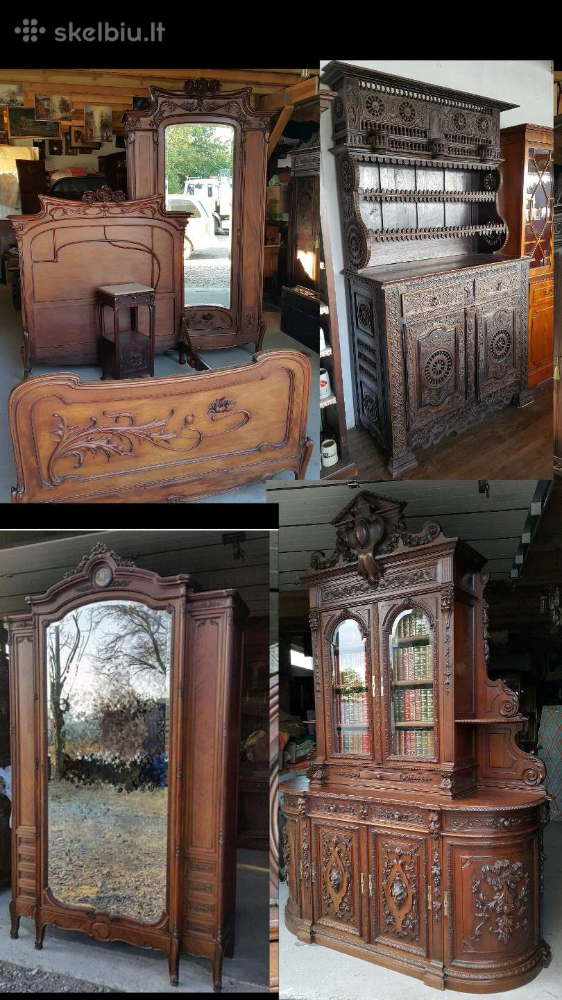
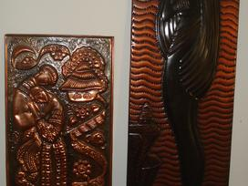
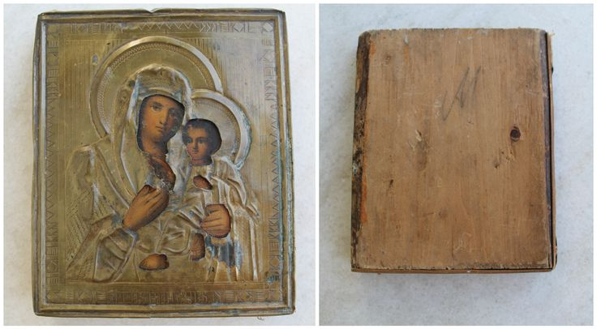

antikvariniai daiktai skelbimai - Skelbiu.lt
2020.10.30 04:30

X Dėl geresnės Skelbiu.lt paslaugų kokybės naudojame slapukus (angl. cookies).
Naršydami toliau, patvirtinate, kad sutinkate su slapukais. Tai bet kada galėsite atšaukti, pakeisdami nustatymus. Skelbiu.lt slapukų politika . Lankomiausias
skelbimų portalas LT RU ( 0 ) Įsiminti skelbimai ( 0 ) Peržiūrėti skelbimai Paieškos ( 0 ) Prisijungti Registruotis antikvariniai daiktai, Visi skelbimai (76) Gauti naujus skelbimus: Ekrane El. paštu + Įdėti skelbimą Įsiminti skelbimai (0) Skelbimų: 76 Tinkamiausi viršuje Tinkamiausi viršuje Naujausi viršuje Atnaujinti viršuje
NEPRALEISKITE NAUJŲ SKELBIMŲ
antikvariniai daiktai, Visi skelbimai
Gaukite naujus skelbimus į ekraną Gaukite naujusskelbimus el. paštu Klaipėda, ... prieš 2 d. 1
Antikvariniai Baldai ir kiti daiktai
Parduodame Antikvariniai baldai - daiktai. Daugiau baldų foto rasite www.senakomoda.lt Vežame (ieškome) pagal užsakymą baldus, bei visokius antikvarinius daiktus. Dirbame su klientais individualiai. Pristatome prekes visoje Lietuvoje. Facebook ... Vilnius prieš 1 d. 1Sandėlio išpardavimas Antikvariniai baldai daiktai
Išparduodu įvairius daiktus: IKEA 2-vietė sofa - 70 eur (mažai naudota) BOXER dujinis šildytuvas (raketa) - 90 eur (naudotas buvo vieną kartą) Lentyna metalinė - 30 eur Antikvariniai senoviniai virduliai - nuo 90 eur iki 150 eur Kalvių darbo... Būklė: naudota 15 € Kaišiadorių r. spalio 20 d.Antikvariniai daiktai
Kuporas150euru Akmeninė stalinė lempa 10eurų Bezmėnai po 25 eurus Skaitliukai po 10 eurų Kontaktai tik tel. 862827706. 10 € Rietavas prieš 1 d.Antikvariniai Daiktai
Mazesnis telefonas nenaudotas 100e siuksliadeze 100€ mesmale 10€ tv30€ Radija ploksteliu grotuvas 30€ Krosnele50€ Paskutinis signalas 20€ Samovaras tvarkingas apdulkijes reikia nusivalyti yra kai kas išgraviruota buvo kaškam kaškada... 15 € Vilkaviškio r. prieš 1 d.Antikvariniai daiktai ,baldai
Vienadure spinta,260e.kede45e.suoliukas80 Skulprura 180e. 260 € Lazdijų r. prieš 2 d.Antikvariniai , senoviniai ūkio daiktai
ŪKIO PADARGŲ IŠPARDAVIMAS! Parduodamas ūkis, daiktai ir jų būklė matomi nuotraukose. Kainos sutartinės. Pečius, Akselinė, savadarbė tarkavimo- rankinė akselinė, arklinės grabiarkos 1 vnt, varikliai, plastikiniai skysčių bakai apie 35ltr,... 1 € Kretingos r., ... prieš 1 d.Įvairus antikvariniai daiktai kolekcijoms.
Vladimiro Vysockio nuotraukos su dainu tekstais kitoje puseje Kalinėto vario paveikslas Undine. 71x27 cm - 40 eu Kalinėto vario paveikslas Porele 26,5 - 49 cm - 30 eu sovietinių laikų stiklinių laikiklius (podstakannikus) - vnt 5 eu senovini... 10 € Kita prieš 3 val.Senovinės, antikvarinės lygumų slidės Šatrija 1983
Parduodamos senovinės, antikvarinės, medinės lygumų slidės Šatrija, Kaunas dinamo, naujos, Senoviniai, antikvariniai daiktai - tai Jūsų prisiminimai, Puiki idėja, papuošti Jūsų namus, darbo kabinetą, papildyti Jūsų daiktų kolekciją, reklamai... 50 € Panevėžys, ... spalio 26 d.Guminė kaukė ant galvos
Guminė kaukė ant galvos Kaukė nemaža - telpa ant bet kokios galvos :) Jeigu nėra galimybės atvykti į Panevėžį siunčiu registruotu paštu. Siuntimas NEMOKAMAI. O jeigu patinka antikvariniai,senoviniai daiktai apžiūrėkite kitas mano prekes ir... 44 / 16 / XL | Nauja 25 € Kaunas prieš 1 d.Senoviniai tarybiniai staliniai laikrodžiai
Gal ką sudomintų senoviniai tarybiniai staliniai laikrodžiai. Patvarkius galėtų tikti interjerui ar kolekcionavimui kaip antikvariniai daiktai. Kaina po 3-4 Eur už vieną. Kreiptis Kaune: tel. 8(37)727735. Būklė: naudota 3 € Reklama Panevėžys, ... spalio 26 d.Dujokaukės sovietinės
Tai senos, nenaudotos sovietinės dujokaukės. Yra virš 10vnt. KAINA - po 7€. Siuntimo KAINA paštu - 3€. Jeigu patinka antikvariniai,senoviniai daiktai apžiūrėkite kitas mano prekes ir rasite kažką sau naudingą.Spauskite, nusikopijuokite - http:/... 7 € Panevėžys, ... spalio 26 d.Pakabinamos Žibalinės lempos veikiančios
Pakabinamos Žibalinės lempos veikiančios Taip pat parduodami atskirai - STIKLIUKAI. Pasiėmimas patiems, arba galime atsiųsti saugiau per autobusų siuntų skyrių. Jeigu patinka antikvariniai,senoviniai daiktai apžiūrėkite kitas mano prekes ir... 30 € Kaunas spalio 17 d.Perku gintara,auksa,antikvarinius daiktus
Superku gintarą, perka gintarą, gintaro supirkimas, superkame gintarą, perku gintarą, gintarų supirkimas, perkame gintarą, gintaro karoliai, gintaro kaina už gramą, Brangiai perku gintarą, Gintaro kaina, Gintaro žaliava, Supirkimas gintaro... Ieško Panevėžys, ... spalio 26 d.Bronzinė sėdinti Mergina, vardinė
Bronzinė sėdinti, apsinuodusi Mergina, vardinė yra foto matosi įspaudai. Aukštis - 28cm, svoris - 770gr. Pasiėmimas patiems Panevėžyje, arba galime atsiųsti paštu, ar per autobusų siuntų skyrių. Jeigu patinka antikvariniai,senoviniai daiktai... 135 € Panevėžys, ... spalio 26 d.Įdomus Bronzinis Sidabruotas Arbatinukas
Tai retas, kolekcinis ir įdomūs, rankų darbo bronzinis, dekoratyvinis, stipriai SIDABRUOTAS ARBATINUKAS. Iš Tibeto. IŠMATAVIMAI: 11cm x 13.5cm, svoris apie 480gr. P.S.pasiėmimas patiems, arba galime atsiųsti paštu. Atsiuntimo KAINA LT ribose... 60 € Vilnius, ... spalio 19 d.Ieškau gintaro, jo dirbinių, karolių, sendaikčių
SUPERKAME GINTARĄ ! Karolius, apyrankes, pakabukus, grynuolius ir kitus dirbinius. Neturite gintaro, bet vis tiek norite užsidirbti? Skambinkite giminaičiams, draugams, kaimynams! Galbūt gintaro turi Jie! Pasiūlykite Jiems parduoti savo... Ieško Panevėžys, ... spalio 26 d.Senovinė Lietuviška Kraičių Skrynia 1852m.
Senovinė Lietuviška Kraičių skrynia, su metais 1852m. Atsiėmimas Panevėžyje. Reikalui esant galime l.greitai (per 1-2dienas) atsiųsti per DPD siuntų skyrių. Siuntimo kaina - 20 €. P.S. turime ir daugiau įvairių kraičių skrynių. Jeigu patinka... 180 € Panevėžys, ... spalio 26 d.A. Hitlerio bronzinis biustas statula
Tai Adolfo Hitlerio sunki bronzinė skulptūra, biustas. IŠMATAVIMAI: 17cm * 12, 5cm * 8cm Svoris virš 1kg. Jeigu nėra galimybės atsiimti patiems (ar per pažystamus) Panevėžyje, siunčiame paštu. Jeigu patinka antikvariniai,senoviniai daiktai, arba... 95 € Panevėžys, ... spalio 26 d.V.i.lenino bronzinis biustas statula skulptūra
Tai pakankamai SUNKI V.I.Lenino bronzinė skulptūra, biustas. PASPAUSKITE ANT FOTO-TADA GERIAU IR DAUGIAU FOTO MATYSITE! IŠMATAVIMAI: 17.5cm * 11cm * 7cm SVORIS - 1450gr. Yra ir kitokių bronzinių biustų. Jeigu nėra galimybės atsiimti patiems (ar... 95 € Panevėžys, ... spalio 26 d.Įdomus interjeras-senovinių Varinių Indų kolekcija
Tai puikus namų papuošimas, puikus interjeras! Parduodama senovinių varinių indų kolekcija, kartu su visa pakaba-laikikliu jiems. Pakaba gali siaurėti-plėstis. Pakabos ilgis kontroliuojamas, gali pailgėti, gali sumažėti. Paspauskite ant bet... 230 € Panevėžys, ... spalio 26 d.Meniškos ekolog. dervos skulptūros simboliai
Meniškos ekologiškos dervos skulptūra - “Tylos" simbolis. Aukštis - 35cm, KAINA - 40€ ŠIOS SKULPTŪROS PARDUOTOS, BET GALIMA UŽSISAKYTI! KELIOS JAU ATKELIAVO PAS MUS! - (šis sakinys bus pašalintas, kai vėl parsiduos, galios "GALIMA UŽSISAKYTI",... Būklė: nauja 40 € Panevėžys, ... spalio 26 d.Girnos(girnapuses)
Tai neišlietos iš kokio betono ar šiaip ko nors, o padarytos gilioje senovėje iš tikro akmens girnos, skirtos smulkinti,malti grūdus. VIENOS GIRNOS(girnapusės) KAINA - 35 € (yra trys). Neskilusios. Metalinius lankus galima lengvai numušti. ... 35 € Panevėžys, ... spalio 26 d.Pinta senovinė Skrynia
Pinta senovinė skrynia su įdomiu uždarymu ir veikiančia spyna. Stovis dar išlikęs labai geras IŠMATAVIMAI: Ilgis - 84cm, aukštis - 60cm, plotis - 55cm - Atsiėmimas patiems Panevėžyje. Siuntimas per DPD siuntų skyrių 15€. Arba į kai kuriuos... 85 € Panevėžys, ... spalio 26 d.Senovinės (Tarpukario) Molinės Puodynės
Įvairios senovinės tarpukario molinės puodynės.Kainos vienodos - po13 €. Nr.10 - PARDUOTA! PASPAUSKITE ANT FOTO-TADA GERIAU IR DAUGIAU FOTO MATYSITE! PIRKTI GALIMA IR PO VIENA! Atsiėmimas patiems Panevėžyje. Siuntimas paštu LT ribose po viena -... 13 € 1 2 3 4 Įsiminti skelbimai Įdėkite skelbimą Prisijunk ir rask savo įsimintus skelbimus visur – kompiuteryje, telefone, planšetėje ARBA Jungtis su Facebook Jungtis su Google Skelbiu.lt pagalba: +370 664 55727 Darbo laikas: I-V 08:20 - 17:00 Naudojimo taisyklės / D.U.K. Kontaktai Svetainės struktūra D I G I N E T- Antikvariniai daiktai • Oldtimers forumas
- Antikvariniai Vintage Retro daiktai - Parduodunaudota.lt
- Antikvariniai daiktai Rugsėjis 2020
- antikvariniai daiktai skelbimai | Skelbimai.lt - nemokami ...
- Antikvariniai ginklai I Ginklu parduotuve I Karinis I ...
- Antikvariniai daiktai ir kolekcionavimas: žinynai ...
- AntikvariniaiBaldai.LT - antikvariniai ir senoviniai baldai
- Senoviniai, antikvariniai daiktai, dekoro detalės ...
- antikvariniai daiktai skelbimai - Skelbiu.lt
- SENOVĖS PRABANGA – Prekyba senoviniais ir antikvariniais ...
- Antikvariniai daiktai • Oldtimers forumas
Antikvariniai daiktai 1) Skyrelyje „Perku / Parduodu senienas, antikvarinius daiktus“ talpinami skelbimai ir aukcionai. Šiame skyrelyje vyksta prekyba tik daiktais: interjeras, buitiniai rakandai, ekipuotė, plokštelės, monetos ir t.t. Amžiaus cenzas 30 metų.
- Antikvariniai Vintage Retro daiktai - Parduodunaudota.lt
forume Antikvariniai daiktai. Paskutinis pranešimas: 2019 Gru 04 Tre, 10:29. Paulyx Neatsakyta Apranga? forume Antikvariniai daiktai. Paskutinis pranešimas: 2019 Gru 03 Ant, 0:01. Paulyx Detalė. forume Antikvariniai daiktai. Paskutinis pranešimas: 2019 Geg 09 Ket, 14:42. Tadas_2. Kokį kondensatorių naudoti? forume Antikvariniai daiktai ...
- Antikvariniai daiktai Rugsėjis 2020
Antikvariniai daiktai Kiekvienas gyvenimas turi savo asmeninę didelę šventę, tačiau taip pat yra bendras vieningas, linksmas - Naujųjų metų! Pagrindinė jo puošmena jau seniai buvo Kalėdų eglutė, ji pasirodė namuose su caro Petro įsakymais, ir tai jau šimtmetis, kad mus laimingi.
- antikvariniai daiktai skelbimai | Skelbimai.lt - nemokami ...
Antikvariniai, kolekciniai bei kiti senoviški, tarybiniai daiktai, senoviniai, antikvariniai baldai, lietuviški sendaikčiai. Visa informacija (daugiau daiktų, nuotraukos bei KAINOS) tinklapyje: www.antikvaraskaune.lt Tinklalapis nuolat atnaujinamas. Siunčiu ir į kitus miestus Jums patogiu būdu.
- Antikvariniai ginklai I Ginklu parduotuve I Karinis I ...
Gal ką sudomintų senoviniai tarybiniai staliniai laikrodžiai. Patvarkius galėtų tikti interjerui ar kolekcionavimui kaip antikvariniai daiktai. Kaina po 3-4 Eur už vieną. Kreiptis Kaune: tel. 8(37)727735.
- Antikvariniai daiktai ir kolekcionavimas: žinynai ...
Antikvariniai daiktai ir kolekcionavimas: knygos, rankraščiai, įv. spaudiniai (anglų k.) Antikvariniai daiktai ir kolekcionavimas: paveikslai, meno spaudiniai ir žemėlapiai (anglų k.) Antikvariniai daiktai ir kolekcionavimas: žaislai, žaidimai, lėlės ir modeliukai (anglų k.)
- AntikvariniaiBaldai.LT - antikvariniai ir senoviniai baldai
Kolekcionavimo forumai, straipsniai, diskusijos apie kolekcionavimą ir asmeninės kolekcijos sudarymą, eksponavimą, naujienos, įvairūs apmąstymai apie kolekcionavimo tendencijas pasaulyje ir Lietuvoje
- Senoviniai, antikvariniai daiktai, dekoro detalės ...
6. Antikvariniai daiktai išlaiko arba padidina vertę. Gerai prižiūrimų antikvarinių daiktų vertė laikui bėgant didėja. Nors kainos kyla ir krenta (beje daugelis ekspertų sako, kad dabar yra geriausias laikas investuoti į senovinius daiktus), antikvariniai daiktai yra gera investicija.
- antikvariniai daiktai skelbimai - Skelbiu.lt
5 antikvariniai daiktai, kurie privers patikėti vaiduokliais: Elektrinė kėdė. Tai buvo kėdė nepanaši į jokią kitą kėdę. Vienas žmogus užėjo į antikvarinių daiktų parduotuvę. Parduotuvėje jis ranka užkliudė kėdę ir pajuto, kad plaukeliai ant jo rankos pasistojo piestu, tarsi kėdė būtų turėjusi kokį nors elektros ...
- SENOVĖS PRABANGA – Prekyba senoviniais ir antikvariniais ...
Antikvariniai baldai, sendaikčiai ir interjero detalės Jūsų namams. Pristatome į namus visoje Lietuvoje. Žiūrėkite mūsų antikvarinių baldų katalogą.
Antikvariniai daiktai 1) Skyrelyje „Perku / Parduodu senienas, antikvarinius daiktus“ talpinami skelbimai ir aukcionai. Šiame skyrelyje vyksta prekyba tik daiktais: interjeras, buitiniai rakandai, ekipuotė, plokštelės, monetos ir t.t. Amžiaus cenzas 30 metų.
forume Antikvariniai daiktai. Paskutinis pranešimas: 2019 Gru 04 Tre, 10:29. Paulyx Neatsakyta Apranga? forume Antikvariniai daiktai. Paskutinis pranešimas: 2019 Gru 03 Ant, 0:01. Paulyx Detalė. forume Antikvariniai daiktai. Paskutinis pranešimas: 2019 Geg 09 Ket, 14:42. Tadas_2. Kokį kondensatorių naudoti? forume Antikvariniai daiktai ...
Antikvariniai daiktai Kiekvienas gyvenimas turi savo asmeninę didelę šventę, tačiau taip pat yra bendras vieningas, linksmas - Naujųjų metų! Pagrindinė jo puošmena jau seniai buvo Kalėdų eglutė, ji pasirodė namuose su caro Petro įsakymais, ir tai jau šimtmetis, kad mus laimingi.
Antikvariniai, kolekciniai bei kiti senoviški, tarybiniai daiktai, senoviniai, antikvariniai baldai, lietuviški sendaikčiai. Visa informacija (daugiau daiktų, nuotraukos bei KAINOS) tinklapyje: www.antikvaraskaune.lt Tinklalapis nuolat atnaujinamas. Siunčiu ir į kitus miestus Jums patogiu būdu.
Gal ką sudomintų senoviniai tarybiniai staliniai laikrodžiai. Patvarkius galėtų tikti interjerui ar kolekcionavimui kaip antikvariniai daiktai. Kaina po 3-4 Eur už vieną. Kreiptis Kaune: tel. 8(37)727735.
Antikvariniai daiktai ir kolekcionavimas: knygos, rankraščiai, įv. spaudiniai (anglų k.) Antikvariniai daiktai ir kolekcionavimas: paveikslai, meno spaudiniai ir žemėlapiai (anglų k.) Antikvariniai daiktai ir kolekcionavimas: žaislai, žaidimai, lėlės ir modeliukai (anglų k.)
Kolekcionavimo forumai, straipsniai, diskusijos apie kolekcionavimą ir asmeninės kolekcijos sudarymą, eksponavimą, naujienos, įvairūs apmąstymai apie kolekcionavimo tendencijas pasaulyje ir Lietuvoje
6. Antikvariniai daiktai išlaiko arba padidina vertę. Gerai prižiūrimų antikvarinių daiktų vertė laikui bėgant didėja. Nors kainos kyla ir krenta (beje daugelis ekspertų sako, kad dabar yra geriausias laikas investuoti į senovinius daiktus), antikvariniai daiktai yra gera investicija.
5 antikvariniai daiktai, kurie privers patikėti vaiduokliais: Elektrinė kėdė. Tai buvo kėdė nepanaši į jokią kitą kėdę. Vienas žmogus užėjo į antikvarinių daiktų parduotuvę. Parduotuvėje jis ranka užkliudė kėdę ir pajuto, kad plaukeliai ant jo rankos pasistojo piestu, tarsi kėdė būtų turėjusi kokį nors elektros ...
Antikvariniai baldai, sendaikčiai ir interjero detalės Jūsų namams. Pristatome į namus visoje Lietuvoje. Žiūrėkite mūsų antikvarinių baldų katalogą.
  